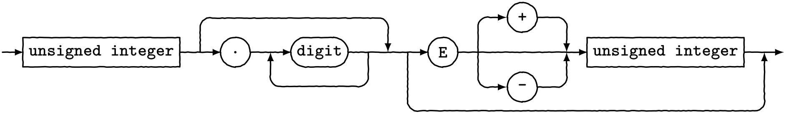
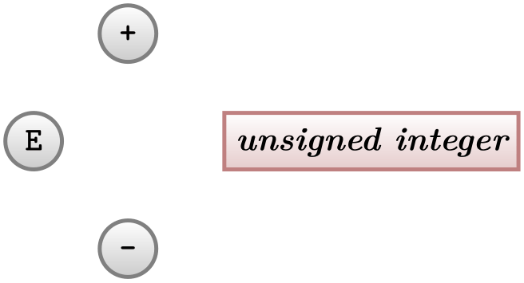
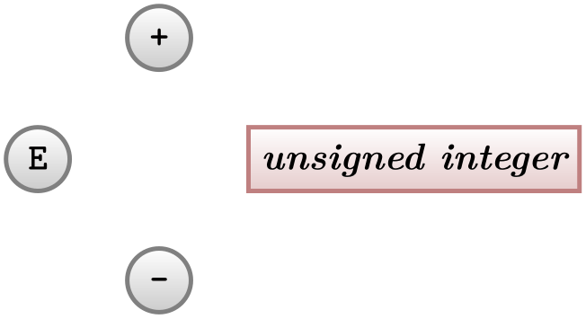
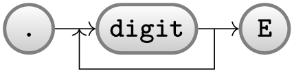
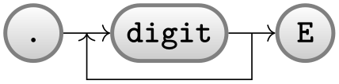
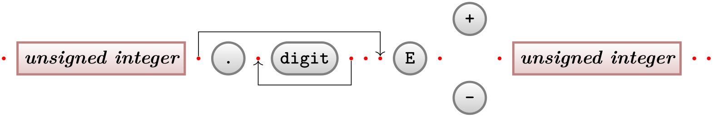
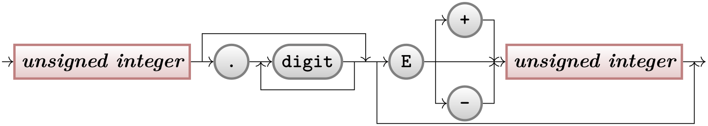
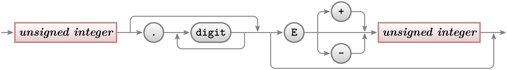
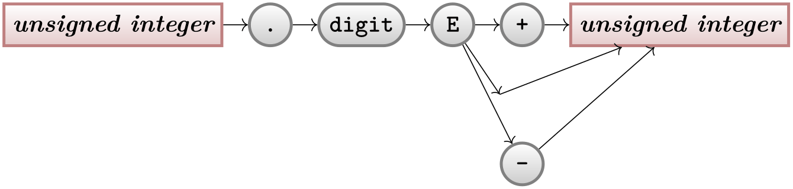
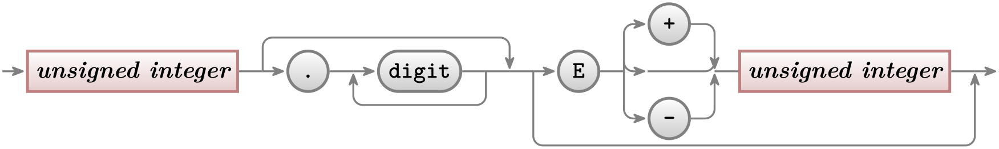

The TikZ and PGF Packages
Manual for version 3.1.10
Tutorials and Guidelines
5 Tutorial: Diagrams as Simple Graphs¶
In this tutorial we have a look at how graphs and matrices can be used to typeset a diagram.
Ilka, who just got tenure for her professorship on Old and Lovable Programming Languages, has recently dug up a technical report entitled The Programming Language Pascal in the dusty cellar of the library of her university. Having been created in the good old times using pens and rules, it looks like this2:

For her next lecture, Ilka decides to redo this diagram, but this time perhaps a bit cleaner and perhaps also bit “cooler”.
Having read the previous tutorials, Ilka knows already how to set up the environment for her diagram, namely using a tikzpicture environment. She wonders which libraries she will need. She decides that she will postpone the decision and add the necessary libraries as needed as she constructs the picture.
2 The shown diagram was not scanned, but rather typeset using TikZ. The jittering lines were created using the random steps decoration.
5.1 Styling the Nodes¶
The bulk of this tutorial will be about arranging the nodes and connecting them using chains, but let us start with setting up styles for the nodes.
There are two kinds of nodes in the diagram, namely what theoreticians like to call terminals and nonterminals. For the terminals, Ilka decides to use a black color, which visually shows that “nothing needs to be done about them”. The nonterminals, which still need to be “processed” further, get a bit of red mixed in.
Ilka starts with the simpler nonterminals, as there are no rounded corners involved. Naturally, she sets up a style:
\usetikzlibrary {positioning}
\begin{tikzpicture}[
nonterminal/.style={
% The shape:
rectangle,
% The size:
minimum size=6mm,
% The border:
very thick,
draw=red!50!black!50, % 50% red and 50% black,
% and that mixed with 50% white
% The filling:
top color=white, % a shading that is white at the top...
bottom color=red!50!black!20, % and something else at the bottom
% Font
font=\itshape
}]
\node [nonterminal] {unsigned
integer};
\end{tikzpicture}
Ilka is pretty proud of the use of the minimum size option: As the name suggests, this option ensures that the node is at least 6mm by 6mm, but it will expand in size as necessary to accommodate longer text. By giving this option to all nodes, they will all have the same height of 6mm.
Styling the terminals is a bit more difficult because of the round corners. Ilka has several options how she can achieve them. One way is to use the rounded corners option. It gets a dimension as parameter and causes all corners to be replaced by little arcs with the given dimension as radius. By setting the radius to 3mm, she will get exactly what she needs: circles, when the shapes are, indeed, exactly 6mm by 6mm and otherwise half circles on the sides:
\usetikzlibrary {positioning}
\begin{tikzpicture}[node distance=5mm,
terminal/.style={
% The shape:
rectangle,minimum size=6mm,rounded corners=3mm,
% The rest
very thick,draw=black!50,
top color=white,bottom color=black!20,
font=\ttfamily}]
\node (dot) [terminal] {.};
\node (digit) [terminal,right=of dot] {digit};
\node (E) [terminal,right=of digit] {E};
\end{tikzpicture}
Another possibility is to use a shape that is specially made for typesetting rectangles with arcs on the sides (she has to use the shapes.misc library to use it). This shape gives Ilka much more control over the appearance. For instance, she could have an arc only on the left side, but she will not need this.
\usetikzlibrary {positioning,shapes.misc}
\begin{tikzpicture}[node distance=5mm,
terminal/.style={
% The shape:
rounded rectangle,
minimum size=6mm,
% The rest
very thick,draw=black!50,
top color=white,bottom color=black!20,
font=\ttfamily}]
\node (dot) [terminal] {.};
\node (digit) [terminal,right=of dot] {digit};
\node (E) [terminal,right=of digit] {E};
\end{tikzpicture}
At this point, she notices a problem. The baseline of the text in the nodes is not aligned:
\usetikzlibrary {calc,positioning,shapes.misc}
\begin{tikzpicture}[node distance=5mm]
\node (dot) [terminal] {.};
\node (digit) [terminal,right=of dot] {digit};
\node (E) [terminal,right=of digit] {E};
\draw [help lines] let
\p1
=
(dot.base),
\p2
=
(digit.base),
\p3
=
(E.base)
in
(-.5,\y1) --
(3.5,\y1)
(-.5,\y2) --
(3.5,\y2)
(-.5,\y3) --
(3.5,\y3);
\end{tikzpicture}
(Ilka has moved the style definition to the preamble by saying \tikzset{terminal/.style=...}, so that she can use it in all pictures.)
For the digit and the E the difference in the baselines is almost imperceptible, but for the dot the problem is quite severe: It looks more like a multiplication dot than a period.
Ilka toys with the idea of using the base right=of... option rather than right=of... to align the nodes in such a way that the baselines are all on the same line (the base right option places a node right of something so that the baseline is right of the baseline of the other object). However, this does not have the desired effect:
\usetikzlibrary {positioning,shapes.misc}
\begin{tikzpicture}[node distance=5mm]
\node (dot) [terminal] {.};
\node (digit) [terminal,base right=of dot] {digit};
\node (E) [terminal,base right=of digit] {E};
\end{tikzpicture}
The nodes suddenly “dance around”! There is no hope of changing the position of text inside a node using anchors. Instead, Ilka must use a trick: The problem of mismatching baselines is caused by the fact that . and digit and E all have different heights and depth. If they all had the same, they would all be positioned vertically in the same manner. So, all Ilka needs to do is to use the text height and text depth options to explicitly specify a height and depth for the nodes.
\usetikzlibrary {positioning,shapes.misc}
\begin{tikzpicture}[node distance=5mm,
text height=1.5ex,text depth=.25ex]
\node (dot) [terminal] {.};
\node (digit) [terminal,right=of dot] {digit};
\node (E) [terminal,right=of digit] {E};
\end{tikzpicture}
5.2 Aligning the Nodes Using Positioning Options¶
Ilka now has the “styling” of the nodes ready. The next problem is to place them in the right places. There are several ways to do this. The most straightforward is to simply explicitly place the nodes at certain coordinates “calculated by hand”. For very simple graphics this is perfectly alright, but it has several disadvantages:
-
1. For more difficult graphics, the calculation may become complicated.
-
2. Changing the text of the nodes may make it necessary to recalculate the coordinates.
-
3. The source code of the graphic is not very clear since the relationships between the positions of the nodes are not made explicit.
For these reasons, Ilka decides to try out different ways of arranging the nodes on the page.
The first method is the use of positioning options. To use them, you need to load the positioning library. This gives you access to advanced implementations of options like above or left, since you can now say above=of some node in order to place a node above of some node, with the borders separated by node distance.
Ilka can use this to draw the place the nodes in a long row:
\usetikzlibrary {positioning,shapes.misc}
\begin{tikzpicture}[node distance=5mm and 5mm]
\node (ui1) [nonterminal] {unsigned
integer};
\node (dot) [terminal,right=of ui1] {.};
\node (digit) [terminal,right=of dot] {digit};
\node (E) [terminal,right=of digit] {E};
\node (plus) [terminal,above right=of E] {+};
\node (minus) [terminal,below right=of E] {-};
\node (ui2) [nonterminal,below right=of plus] {unsigned
integer};
\end{tikzpicture}
For the plus and minus nodes, Ilka is a bit startled by their placements. Shouldn’t they be more to the right? The reason they are placed in that manner is the following: The north east anchor of the E node lies at the “upper start of the right arc”, which, a bit unfortunately in this case, happens to be the top of the node. Likewise, the south west anchor of the + node is actually at its bottom and, indeed, the horizontal and vertical distances between the top of the E node and the bottom of the + node are both 5mm.
There are several ways of fixing this problem. The easiest way is to simply add a little bit of horizontal shift by hand:

\usetikzlibrary {positioning,shapes.misc}
\begin{tikzpicture}[node distance=5mm and 5mm]
\node (E) [terminal] {E};
\node (plus) [terminal,above right=of E,xshift=5mm] {+};
\node (minus) [terminal,below right=of E,xshift=5mm] {-};
\node (ui2) [nonterminal,below right=of plus,xshift=5mm] {unsigned
integer};
\end{tikzpicture}
A second way is to revert back to the idea of using a normal rectangle for the terminals, but with rounded corners. Since corner rounding does not affect anchors, she gets the following result:

\usetikzlibrary {positioning,shapes.misc}
\begin{tikzpicture}[node distance=5mm and 5mm,terminal/.append style={rectangle,rounded corners=3mm}]
\node (E) [terminal] {E};
\node (plus) [terminal,above right=of E] {+};
\node (minus) [terminal,below right=of E] {-};
\node (ui2) [nonterminal,below right=of plus] {unsigned
integer};
\end{tikzpicture}
A third way is to use matrices, which we will do later.
Now that the nodes have been placed, Ilka needs to add connections. Here, some connections are more difficult than others. Consider for instance the “repeat” line around the digit. One way of describing this line is to say “it starts a little to the right of digit than goes down and then goes to the left and finally ends at a point a little to the left of digit”. Ilka can put this into code as follows:

\usetikzlibrary {calc,positioning,shapes.misc}
\begin{tikzpicture}[node distance=5mm and 5mm]
\node (dot) [terminal] {.};
\node (digit) [terminal,right=of dot] {digit};
\node (E) [terminal,right=of digit] {E};
\path (dot) edge[->] (digit) % simple edges
(digit) edge[->] (E);
\draw [->]
% start right of digit.east, that is, at the point that is
the
% linear combination of digit.east and the vector (2mm,0pt).
We
% use the ($ ... $) notation for computing linear
combinations
($ (digit.east) +
(2mm,0) $)
% Now go down
--
++(0,-.5)
% And back to the left of digit.west
-|
($ (digit.west) -
(2mm,0) $);
\end{tikzpicture}
Since Ilka needs this “go up/down then horizontally and then up/down to a target” several times, it seems sensible to define a special to-path for this. Whenever the edge command is used, it simply adds the current value of to path to the path. So, Ilka can set up a style that contains the correct path:
\usetikzlibrary {calc,positioning,shapes.misc}
\begin{tikzpicture}[node distance=5mm and 5mm,
skip loop/.style={to path={-- ++(0,-.5) -|
(\tikztotarget)}}]
\node (dot) [terminal] {.};
\node (digit) [terminal,right=of dot] {digit};
\node (E) [terminal,right=of digit] {E};
\path (dot) edge[->] (digit) % simple edges
(digit) edge[->] (E)
($ (digit.east) +
(2mm,0) $)
edge[->,skip loop] ($ (digit.west) -
(2mm,0) $);
\end{tikzpicture}
Ilka can even go a step further and make her skip loop style parameterized. For this, the skip loop’s vertical offset is passed as parameter #1. Also, in the following code Ilka specifies the start and targets differently, namely as the positions that are “in the middle between the nodes”.

\usetikzlibrary {calc,positioning,shapes.misc}
\begin{tikzpicture}[node distance=5mm and 5mm,
skip loop/.style={to path={-- ++(0,#1) -|
(\tikztotarget)}}]
\node (dot) [terminal] {.};
\node (digit) [terminal,right=of dot] {digit};
\node (E) [terminal,right=of digit] {E};
\path (dot) edge[->] (digit) % simple edges
(digit) edge[->] (E)
($ (digit.east)!.5!(E.west) $)
edge[->,skip loop=-5mm] ($ (digit.west)!.5!(dot.east) $);
\end{tikzpicture}
5.3 Aligning the Nodes Using Matrices¶
Ilka is still bothered a bit by the placement of the plus and minus nodes. Somehow, having to add an explicit xshift seems too much like cheating.
A perhaps better way of positioning the nodes is to use a matrix. In TikZ matrices can be used to align quite arbitrary graphical objects in rows and columns. The syntax is very similar to the use of arrays and tables in TeX (indeed, internally TeX tables are used, but a lot of stuff is going on additionally).
In Ilka’s graphic, there will be three rows: One row containing only the plus node, one row containing the main nodes and one row containing only the minus node.
\usetikzlibrary {shapes.misc}
\begin{tikzpicture}
\matrix[row sep=1mm,column sep=5mm] {
% First row:
&
&
&
&
\node [terminal] {+}; &
\\
% Second row:
\node [nonterminal] {unsigned
integer}; &
\node [terminal] {.}; &
\node [terminal] {digit}; &
\node [terminal] {E}; &
&
\node [nonterminal] {unsigned
integer}; \\
% Third row:
&
&
&
&
\node [terminal] {-}; &
\\
};
\end{tikzpicture}
That was easy! By toying around with the row and columns separations, Ilka can achieve all sorts of pleasing arrangements of the nodes.
Ilka now faces the same connecting problem as before. This time, she has an idea: She adds small nodes (they will be turned into coordinates later on and be invisible) at all the places where she would like connections to start and end.

\usetikzlibrary {shapes.misc}
\begin{tikzpicture}[point/.style={circle,inner sep=0pt,minimum size=2pt,fill=red},
skip loop/.style={to path={-- ++(0,#1) -|
(\tikztotarget)}}]
\matrix[row sep=1mm,column sep=2mm] {
% First row:
&
&
&
&
&
&
&
&
&
&
&
\node (plus) [terminal] {+};\\
% Second row:
\node (p1) [point] {}; &
\node (ui1) [nonterminal] {unsigned
integer}; &
\node (p2) [point] {}; &
\node (dot) [terminal] {.}; &
\node (p3) [point] {}; &
\node (digit) [terminal] {digit}; &
\node (p4) [point] {}; &
\node (p5) [point] {}; &
\node (p6) [point] {}; &
\node (e) [terminal] {E}; &
\node (p7) [point] {}; &
&
\node (p8) [point] {}; &
\node (ui2) [nonterminal] {unsigned
integer}; &
\node (p9) [point] {}; &
\node (p10) [point] {};\\
% Third row:
&
&
&
&
&
&
&
&
&
&
&
\node (minus)[terminal] {-};\\
};
\path (p4) edge
[->,skip loop=-5mm] (p3)
(p2) edge
[->,skip loop=5mm] (p6);
\end{tikzpicture}
Now, it’s only a small step to add all the missing edges.
5.4 The Diagram as a Graph¶
Matrices allow Ilka to align the nodes nicely, but the connections are not quite perfect. The problem is that the code does not really reflect the paths that underlie the diagram. For this, it seems natural enough to Ilka to use the graphs library since, after all, connecting nodes by edges is exactly what happens in a graph. The graphs library can both be used to connect nodes that have already been created, but it can also be used to create nodes “on the fly” and these processes can also be mixed.
5.4.1 Connecting Already Positioned Nodes¶
Ilka has already a fine method for positioning her nodes (using a matrix), so all that she needs is an easy way of specifying the edges. For this, she uses the \graph command (which is actually just a shorthand for \path graph). It allows her to write down edges between them in a simple way (the macro \matrixcontent contains exactly the matrix content from the previous example; no need to repeat it here):

\usetikzlibrary {graphs,shapes.misc}
\begin{tikzpicture}[skip loop/.style={to path={-- ++(0,#1) -|
(\tikztotarget)}},
hv path/.style={to path={-|
(\tikztotarget)}},
vh path/.style={to path={|-
(\tikztotarget)}}]
\matrix[row sep=1mm,column sep=2mm] { \matrixcontent };
\graph {
(p1) ->
(ui1) --
(p2) ->
(dot) --
(p3) ->
(digit) --
(p4)
--
(p5) --
(p6) ->
(e) --
(p7) --
(p8) ->
(ui2) --
(p9) ->
(p10);
(p4) ->[skip loop=-5mm] (p3);
(p2) ->[skip loop=5mm] (p5);
(p6) ->[skip loop=-11mm] (p9);
(p7) ->[vh path] (plus) ->
[hv path] (p8);
(p7) ->[vh path] (minus) ->
[hv path] (p8);
};
\end{tikzpicture}
This is already pretty near to the desired result, just a few “finishing touches” are needed to style the edges more nicely.
However, Ilka does not have the feeling that the graph command is all that hot in the example. It certainly does cut down on the number of characters she has to write, but the overall graph structure is not that much clear – it is still mainly a list of paths through the graph. It would be nice to specify that, say, there the path from (p7) sort of splits to (plus) and (minus) and then merges once more at (p8). Also, all these parentheses are bit hard to type.
It turns out that edges from a node to a whole group of nodes are quite easy to specify, as shown in the next example. Additionally, by using the use existing nodes option, Ilka can also leave out all the parentheses (again, some options have been moved outside to keep the examples shorter):

\usetikzlibrary {arrows.meta,graphs,shapes.misc}
\begin{tikzpicture}[>={Stealth[round]},thick,black!50,text=black,
every new ->/.style={shorten >=1pt},
graphs/every graph/.style={edges=rounded corners}]
\matrix[column sep=4mm] { \matrixcontent };
\graph [use existing nodes] {
p1
->
ui1
--
p2
->
dot
--
p3
->
digit
--
p4
--
p5
--
p6
->
e
--
p7
--
p8
->
ui2
--
p9
->
p10;
p4
->[skip loop=-5mm] p3;
p2
->[skip loop=5mm] p5;
p6
->[skip loop=-11mm] p9;
p7
->[vh path] { plus, minus
} ->
[hv path] p8;
};
\end{tikzpicture}
5.4.2 Creating Nodes Using the Graph Command¶
Ilka has heard that the graph command is also supposed to make it easy to create nodes, not only to connect them. This is, indeed, correct: When the use existing nodes option is not used and when a node name is not surrounded by parentheses, then TikZ will actually create a node whose name and text is the node name:
Not quite perfect, but we are getting somewhere. First, let us change the positioning algorithm by saying grow right sep, which causes new nodes to be placed to the right of the previous nodes with a certain fixed separation (1em by default). Second, we add some options to make the node “look nice”. Third, note the funny d node above: Ilka tried writing just . there first, but got some error messages. The reason is that a node cannot be called . in TikZ, so she had to choose a different name – which is not good, since she wants a dot to be shown! The trick is to put the dot in quotation marks, this allows you to use “quite arbitrary text” as a node name:

Now comes the fork to the plus and minus signs. Here, Ilka can use the grouping mechanism of the graph command to create a split:

\usetikzlibrary {graphs,shapes.misc}
\tikz \graph [grow right sep] {
unsigned
integer
[nonterminal] ->
"."
[terminal] ->
digit
[terminal] ->
E
[terminal] ->
{
"+"
[terminal],
""
[coordinate],
"-"
[terminal]
} ->
ui2/unsigned
integer
[nonterminal]
};
Let us see, what is happening here. We want two unsigned integer nodes, but if we just were to use this text twice, then TikZ would have noticed that the same name was used already in the current graph and, being smart (actually too smart in this case), would have created an edge back to the already-created node. Thus, a fresh name is needed here. However, Ilka also cannot just write unsigned integer2, because she wants the original text to be shown, after all! The trick is to use a slash inside the node name: In order to “render” the node, the text following the slash is used instead of the node name, which is the text before the slash. Alternatively, the as option can be used, which also allows you to specify how a node should be rendered.
It turns out that Ilka does not need to invent a name like ui2 for a node that she will not reference again anyway. In this case, she can just leave out the name (write nothing before /), which always stands for a “fresh, anonymous” node name.
Next, Ilka needs to add some coordinates in between of some nodes where the back-loops should got and she needs to shift the nodes a bit:

\usetikzlibrary {arrows.meta,graphs,shapes.misc}
\begin{tikzpicture}[>={Stealth[round]}, thick, black!50, text=black,
every new ->/.style={shorten >=1pt},
graphs/every graph/.style={edges=rounded corners}]
\graph [grow right sep, branch down=7mm] {
/
[coordinate] ->
unsigned
integer
[nonterminal] --
p1
[coordinate] ->
"."
[terminal] --
p2
[coordinate] ->
digit
[terminal] --
p3
[coordinate] --
p4
[coordinate] --
p5
[coordinate] ->
E
[terminal] --
q1
[coordinate] ->[vh path]
{ [nodes={yshift=7mm}]
"+"
[terminal],
q2/
[coordinate],
"-"
[terminal]
} ->
[hv path]
q3
[coordinate] --
/unsigned
integer
[nonterminal] --
p6
[coordinate] ->
/
[coordinate];
p1
->[skip loop=5mm] p4;
p3
->[skip loop=-5mm] p2;
p5
->[skip loop=-11mm] p6;
};
\end{tikzpicture}
All that remains to be done is to somehow get rid of the strange curves between the E and the unsigned integer. They are caused by TikZ’s attempt at creating an edge that first goes vertical and then horizontal but is actually just horizontal. Additionally, the edge should not really be pointed; but it seems difficult to get rid of this since the other edges from q1, namely to plus and minus should be pointed.
It turns out that there is a nice way of solving this problem: You can specify that a graph is simple. This means that there can be at most one edge between any two nodes. Now, if you specify an edge twice, the options of the second specification “win”. Thus, by adding two more lines that “correct” these edges, we get the final diagram with its complete code:
\usetikzlibrary {arrows.meta,graphs,shapes.misc}
\tikz [>={Stealth[round]}, black!50, text=black, thick,
every new ->/.style =
{shorten >=1pt},
graphs/every graph/.style =
{edges=rounded corners},
skip loop/.style =
{to path={-- ++(0,#1) -|
(\tikztotarget)}},
hv path/.style =
{to path={-|
(\tikztotarget)}},
vh path/.style =
{to path={|-
(\tikztotarget)}},
nonterminal/.style =
{
rectangle, minimum size=6mm, very thick, draw=red!50!black!50, top color=white,
bottom color=red!50!black!20, font=\itshape, text height=1.5ex,text depth=.25ex},
terminal/.style =
{
rounded rectangle, minimum size=6mm, very thick, draw=black!50, top color=white,
bottom color=black!20, font=\ttfamily, text height=1.5ex, text depth=.25ex},
shape =
coordinate
]
\graph [grow right sep, branch down=7mm, simple] {
/
->
unsigned
integer[nonterminal] --
p1
->
"."
[terminal] --
p2
->
digit[terminal] --
p3
--
p4
--
p5
->
E[terminal] --
q1
->[vh path]
{[nodes={yshift=7mm}]
"+"[terminal], q2, "-"[terminal]
} ->
[hv path]
q3
--
/unsigned
integer
[nonterminal] --
p6
->
/;
p1
->[skip loop=5mm] p4;
p3
->[skip loop=-5mm] p2;
p5
->[skip loop=-11mm] p6;
q1
--
q2
--
q3; % make these edges plain
};